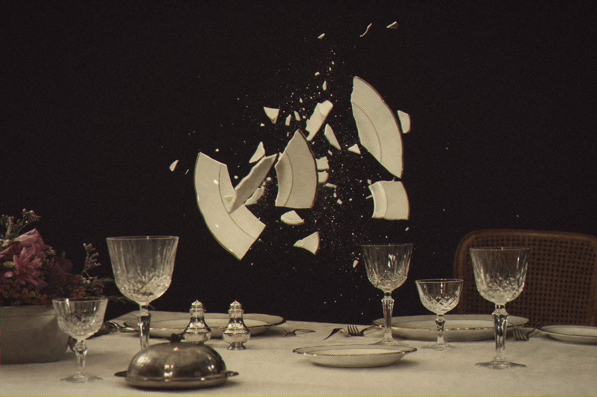

Nobody knows what happens next. Not even us.
In 1996 a little Mac program took any sound you gave it, smashed it into grains and rebuilt it in ways no one could predict. People loved it. Then the operating system it ran on disappeared.
th0nk3000 is a reverse-engineered recreation of Audio Ease's cult Th0nk, back as a modern app and plug-in. This time the source is open, so it can't vanish again.
Drop in a sample and press the button. Each press gives you a different collision, and some of them will end up on your record.

Results may vary. Wildly.
th0nk3000
Granular collider. Standalone and plug-in.
Open source · Standalone · AU · VST3 · CLAP
Jardim SonoroOpen-source audio research
Download: jardimsonoro.com/audioSource & issues: github.com/nagualcode/th0nk3000
Effects09